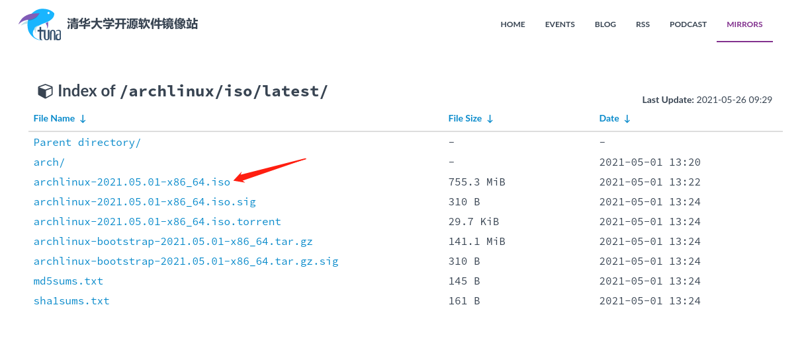

下载ArchLinux镜像
推荐去清华大学开源软件镜像站下载最新版的ArchLinux镜像，点击这里，下载archlinux-xxxx-x86_64.iso。

使用VMware创建虚拟机
接下来打开VMware，使用刚刚下载好的镜像来创建一个虚拟机：
- 第一步：选择典型即可，自定义的高级部分对于新手来说目前还用不到。
- 第二步：选中之前下载好的ArchLinux镜像文件
- 第三步：如图所示进行选择。VMware支持对一些常见的Linux系统例如Ubuntu进行快速安装，但目前尚未支持ArchLinux，所以在“版本”选项里只能选择“其他Linux 5.x 或更高版本内核 64位”
第四步：这一步给虚拟机命名和指定存储位置，按照个人喜好进行选择即可。
第五步：注意，最好将磁盘容量设置的大一些，因为使用后期如果磁盘容量不足需要扩容的话会比较麻烦。而且，我们是以“将虚拟磁盘拆分成多个文件”的方式来分配磁盘容量，因此并不会一次性从主机硬盘中切分出所有的磁盘容量，而是使用多少分配多少，所以即使这里设置的最大磁盘大小超过你主机硬盘的真实容量也没有问题。
- 第六步：自定义硬件部分的内容在以后可以随时更改，这里可以先选择默认，然后点击“完成”即可。
安装ArchLinux系统
启动虚拟机，进入Live环境，选择第一个：
下图是Live环境的操作页面，Live是一个可运行的系统，不用安装到硬盘，直接从介质就能启动。我们需要借助这个Live环境来完成一些硬盘分区等基本操作。
验证启动方式
启动成功后就会进入命令行模式，可以在此处使用以下列出efivars目录以验证启动模式来判断主板是以何种方式引导系统的。
ls /sys/firmware/efi/efivars
如果目录不存在，系统可能以 BIOS 模式启动，则需要使用poweroff命令退出Live环境，并进行如下设置：
连接网络
首先需要连接网络，因为安装过程中需要联网下载一些包，但我们是基于虚拟机启动，所以不需要进行特殊的联网设置，直接就可以ping通百度：
如果你无法联网，可以使用poweroff命令退出Live环境，然后按照下图对虚拟机进行设置：
更新系统时间
因一些安全机制的要求，整个网络需要保持准确一致的时间。NTP是网络时间协议（Network Time Protocol）的简称，它可以提供高精准度的时间校正，其时间来源是国际标准时间UTC。直接输入以下命令：
# timedatectl set-ntp true
# timedatectl status
硬盘分区
查看磁盘情况
输入命令fdisk -l，找到你的要安装的硬盘，如下图中的 /dev/sda，可以看到其大小为1T，这就是当初在创建虚拟机时创建的虚拟硬盘，下面对这个虚拟硬盘进行分区。
硬盘分区设计
| 分区 | 挂载点 | 分区大小 | 分区类型 |
|---|---|---|---|
| /dev/sda1 | /mnt/efi | 512MB | EFI 系统分区 |
| /dev/sda2 | [SWAP] | 8GB | Linux swap (交换空间) |
| /dev/sda3 | /mnt | 剩余空间 | Linux x86-64 根目录 (/) |
执行分区
使用命令cfdisk /dev/sda进行硬盘分区，选择gpt分区格式：
接下来对Free space进行分区，下面以对EFI的分区为例，SWAP分区和根目录分区的方式和EFI分区相同，具体数据参照上一小节中的分区设计表即可。选择下方的[New]：
输入分区大小，512M：
选择[Type]修改分区类型，类型选择EFI System：
SWAP分区和根目录分区的方法如法炮制，最终分区结果如下，选择[Write]将分区表写入硬盘中，然后选择[Quit]退出即可。
退出后，可再次使用fisk -l查看分区情况。
格式化分区
分区后需要进行格式化才能正常使用：
- EFI分区：由于这里使用了EFI分区，因为EFI分区需要FAT32文件格式，所以需要将其格式化为FAT32格式。
- Swap分区：使用 mkswap 将其初始化,使用swapon激活交换空间。
- 根目录分区：格式化为ext4格式。
mkfs.fat -F32 /dev/sda1
mkfs.ext4 /dev/sda3
mkswap /dev/sda2
swapon /dev/sda2
挂载分区
mount /dev/sda3 /mnt
mkdir -p /mnt/efi
mount /dev/sda1 /mnt/efi
修改镜像源
为了提升下载速度，这里镜像源只保留清华源：
vim /etc/pacman.d/mirrorlist
安装基本软件
pacstrap /mnt base base-devel linux linux-firmware vim wget man-db man-pages
生成fstab文件
fstab文件用于自动挂载分区：
genfstab -U /mnt >> /mnt/etc/fstab
至此，ArchLinux的基本系统已经安装完毕。下面，我们进入安装好的系统里进行一些配置。
配置ArchLinux系统
切换根目录到新系统
arch-chroot /mnt
设置时区
更改时区为亚洲、上海，并同步到硬件时间：
ln -sf /usr/share/zoneinfo/Asia/Shanghai /etc/localtimehwclock --systohc
设置语言
使用vim解除/etc/locale.gen中的en_US.UTF-8 UTF-8和zh_CN.UTF-8 UTF-8中的注释，运行下面的命令：
locale-genecho LANG=en_US.UTF-8 > /etc/locale.conf
配置网络
echo arch > /etc/hostname- 编辑
/etc/hosts：
127.0.0.1 localhost
::1 localhost
127.0.1.1 arch.localdomain arch
- 安装
NetworkManager：
pacman -S networkmanager network-manager-appletsystemctl enable NetworkManager.service
设置root密码
passwd
安装启动盘引导器
mkinitcpio -P
pacman -S grub efibootmgr intel-ucode amd-ucode
grub-install --target=x86_64-efi --efi-directory=/efi --bootloader-id=ArchLinux
grub-mkconfig -o /boot/grub/grub.cfg
用户管理
添加用户xxx作为日常使用的账户：
pacman -S sudo
useradd -m -G wheel -s /bin/bash xxx
passwd xxx
passwd -l root
配置pacman
在 /etc/pacman.conf 文件末尾添加以下：
[archlinuxcn]
Server = https://mirrors.tuna.tsinghua.edu.cn/archlinuxcn/$arch
[arch4edu]
Server = https://mirrors.tuna.tsinghua.edu.cn/arch4edu/$arch
执行命令：
sudo pacman-key --recv-keys 7931B6D628C8D3BA
sudo pacman-key --finger 7931B6D628C8D3BA
sudo pacman-key --lsign-key 7931B6D628C8D3BA
sudo pacman -Sy archlinuxcn-keyring
注意，如果在sudo pacman-key --lsign-key 7931B6D628C8D3BA处报和时间有关的错误，可使用date命令修改相应的时间偏移量即可。
除此之外，还可以解除/etc/pacman.conf中的Color和TotalDownload注释。
安装Aur助手
sudo pacman -S yay
安装桌面
这里选择安装KDE，有其他桌面环境安装需求可参考这里。
- 安装xorg服务：
sudo pacman -S xorg xorg-server
- 安装显卡：
sudo pacman -S xf86-video-intel #intel#
sudo pacman -S xf86-video-ati #amd#
- 安装显示管理器：
sudo pacman -S sddm sddm-kcm
systemctl enable sddm
- 安装KDE：
sudo pacman -S plasma kde-applications
- 安装open-vm-tools：
sudo pacman -Sy gtkmm
sudo pacman -Sy open-vm-tools
sudo pacman -Sy xf86-video-vmware
sudo pacman -Sy xf86-input-vmmouse
sudo systemctl enable vmtoolsd.service
sudo systemctl enable vmware-vmblock-fuse.service
至此，reboot后就可以看到KDE桌面环境啦！
配置xdg用户目录
一般情况下，~目录下会有Downloads等具有特殊含义的目录，可以使用以下命令自动生成：
yay -S xdg-user-dirs
xdg-user-dirs-update
文件系统和gvfs
yay -S gvfs gvfs-mtp gvfs-smb gvfs-afc ntfs-3g dosfstools udisks2
安装中文字体
将Windows中的中文字体（C:\Windows\Fonts）打个压缩包发送到arch中，存放到/usr/local/share/fonts目录下：
cd /usr/local/share
sudo mkdir fonts
sudo mv /path/to/Fonts.rar /usr/local/share/fonts
sudo fc-cache -fv
推荐monoco作为终端字体yay ttf-monaco，编辑~/.config/fontconfig/fonts.conf：
<?xml version="1.0"?>
<!DOCTYPE fontconfig SYSTEM "fonts.dtd">
<fontconfig>
<alias>
<family>serif</family>
<prefer>
<family>Times New Roman</family>
<family>SimSun</family>
</prefer>
</alias>
<alias>
<family>sans-serif</family>
<prefer>
<family>Arial</family>
<family>SimHei</family>
</prefer>
</alias>
<alias>
<family>monospace</family>
<prefer>
<family>Monaco</family>
<family>SimSun</family>
</prefer>
</alias>
</fontconfig>
安装输入法
yay -S fcitx5 fcitx5-im fcitx5-chinese-addons fcitx5-configtool fcitx5-pinyin-zhwiki fcitx5-gtk fcitx5-qt
新建文件vim ~/.pam_environment并添加以下内容后reboot即可：
GTK_IM_MODULE DEFAULT=fcitx
QT_IM_MODULE DEFAULT=fcitx
XMODIFIERS DEFAULT=\@im=fcitx
SDL_IM_MODULE DEFAULT=fcitx
重启后，在桌面右下角会出现小键盘的图标，右键configure添加Pinyin这个Input Method即可。默认的输入法切换快捷键是ctrl+space，可以在配置里自行修改为Left Shift。
安装v2ray
sudo pacman -S v2ray
sudo systemctl enable v2ray@xxx # 假如配置文件为xxx.json
使用chromium --proxy-server="socks5://127.0.0.1:1080"可以使chromium临时接受代理。
我们这里使用的是socks5代理，但有些应用可能不支持使用socks5代理，这时候对于命令行的大多数程序，proxychains就可以提供帮助。
yay -S proxychains-ng
编辑/etc/proxychains.conf。解除quiet_mode的注释，最后一行由socks4 127.0.0.1 9050改为socks5 127.0.0.1 1080。此时，在需要运行的命令前加上proxychains就可以方便地使用。如：
# 一些proxychains的例子
proxychains wget https://google.com
proxychains git clone ...
proxychains pip install -r requirements.txt
proxychains npm install
对于proxychains也失效的情况，可以使用全局透明代理来解决，借助iptables可以实现全系统的透明代理。首先允许IP包转发：
sudo sh -c "echo net.ipv4.ip_forward=1 > /etc/sysctl.d/10-ip_forward.conf"
sudo sysctl --system
接下来下载szp大神写好的透明代理脚本：
cd /usr/local/bin
sudo proxychains wget https://raw.githubusercontent.com/sunziping2016/tproxyctl/master/tproxyctl
sudo chmod +x tproxyctl
最后就可以使用以下命令开启/关闭全局透明代理：
sudo tproxyctl start
sudo tproxyctl stop
安装zsh
yay -S zsh
chsh -s /bin/zsh
yay -S oh-my-zsh-git
cp /usr/share/oh-my-zsh/zshrc ~/.zshrc
yay -S zsh-theme-powerlevel10k
ZSH_THEME="powerlevel10k/powerlevel10k" # 修改~/.zshrc文件
source ~/.zshrc
另外，推荐Hack Nerd Mono作为终端字体：
yay -S nerd-fonts-hack
fc-cache
安装常用的软件
yay -S bzip2 zip p7zip unzip-iconv unrar #安装常用的压缩软件
yay -S nutstore # 安装坚果云
yay -S git
yay -S openssh
yay -S typora
yay -S vscode
yay -S google-chrome
yay -S tree
安装Rust
curl --proto '=https' --tlsv1.2 -sSf https://sh.rustup.rs | sh
echo 'source "\$HOME/.cargo/env"' >> ~/.zshrc